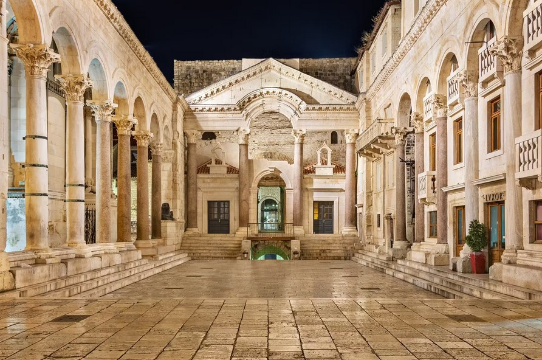
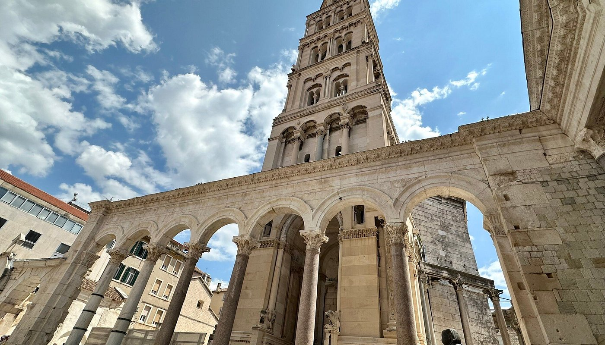
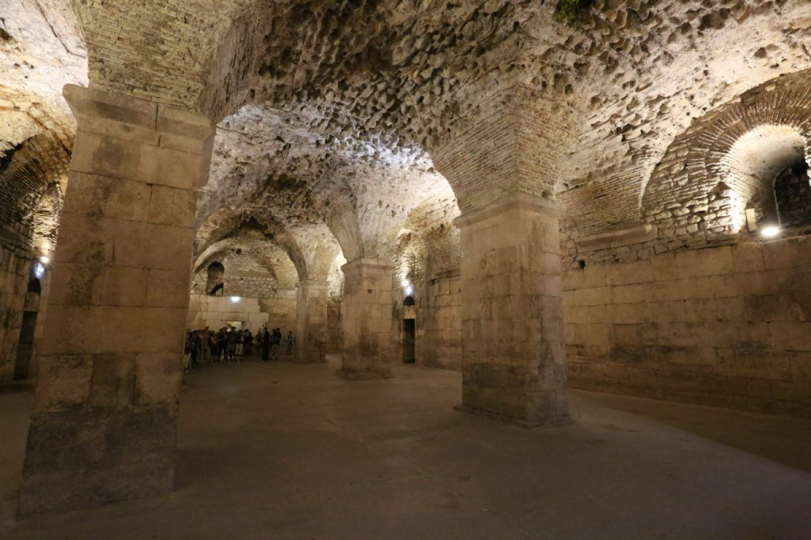
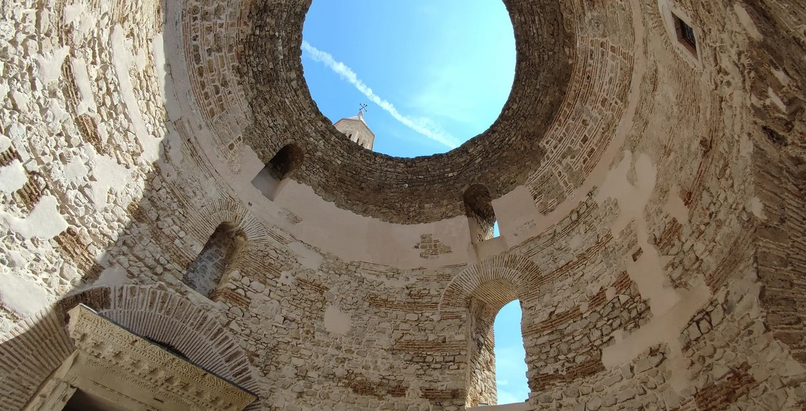
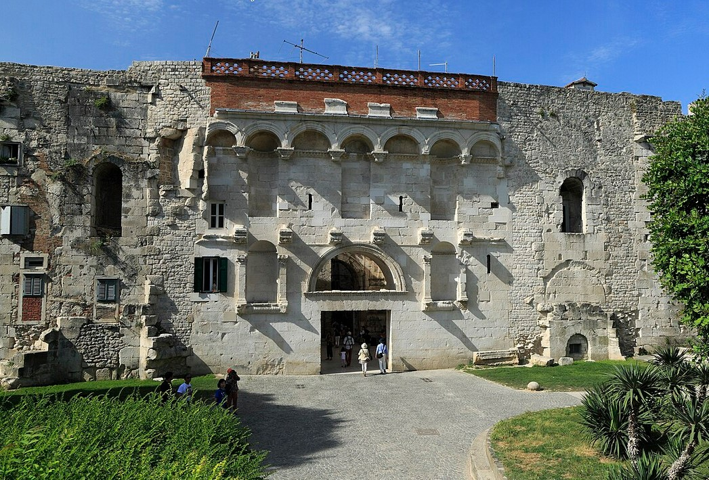
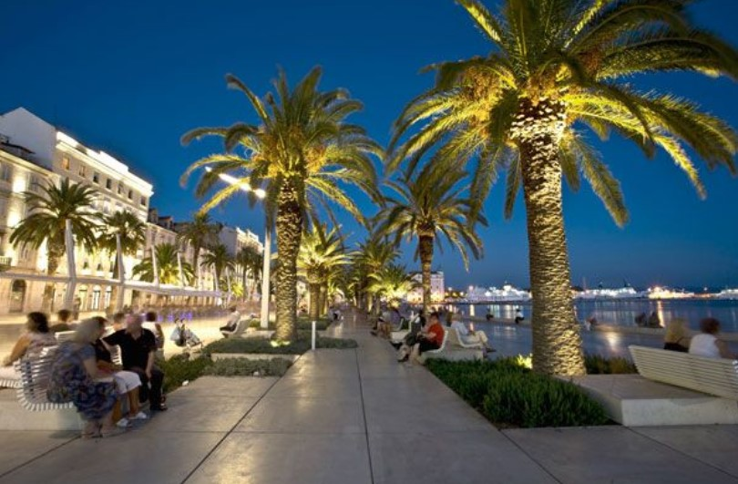

SPLIT 2025
Walk Through History
Explore Split’s UNESCO Heritage!

Where Ancient Rome Lives On.
A testament to ancient architecture.
Explore Split´s underground. So nicely illuminated.
A static marvel. Admire the ancient architecture.
Explore the narrow alleyways (and the cool bars) in this part of the city
See the old city walls and enjoy a drink in one of the cool bars
